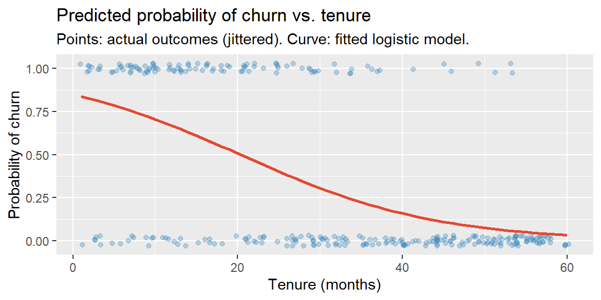

Every regression model in this course so far has predicted a quantitative response, sales, revenue, a rating. Plenty of the most important business questions have a binary answer instead: will this customer churn or stay? Will this loan default or not? Will this lead convert or not? The response variable in each case only takes two values, usually coded 0 and 1, and predicting it calls for a different tool: logistic regression, the beginning of this course’s coverage of classification.
27.2 Why Not Just Use Linear Regression?
It’s tempting to just fit an ordinary least-squares line to a 0/1 outcome. It runs without error, but the result doesn’t behave like a probability.
ExampleExample 11.1: What goes wrong with a linear fit
A subscription company tracks 300 customers’ account tenure (in months) and whether each churned (1) or stayed (0) over the following quarter.
library(tidyverse)set.seed(2025)n <-300tenure <-round(runif(n, 1, 60))#simulate churn probability that genuinely declines with tenurelogodds_true <-1.5-0.08* tenurep_true <-1/ (1+exp(-logodds_true))churned <-rbinom(n, 1, p_true)customers <-tibble(tenure = tenure, churned = churned)model_linear <-lm(churned ~ tenure, data = customers)range(fitted(model_linear))
The fitted values already dip slightly below 0 within the observed data, and predicting a customer with 100 months of tenure gives about \(-0.69\), a “probability” that’s meaningless. A straight line has no way to know it should flatten out near 0 and 1; it just keeps going. There’s also a structural problem the range issue doesn’t even capture: with a binary response, the residuals can’t be normally distributed or have constant variance (they only take two possible values at each \(x\)), so the LINE assumptions behind every t-test and confidence interval from Chapter 25 don’t hold to begin with.
27.3 Probability, Odds, and Log-Odds
Logistic regression solves this by modeling a transformed version of probability that isn’t boxed in between 0 and 1.
Probability (\(p\)): between 0 and 1, the chance the event (churn, default, conversion) happens.
Odds: \(\dfrac{p}{1-p}\), the ratio of the event happening to it not happening. Odds range from 0 (impossible) to \(\infty\) (certain), and are common business language already (“2-to-1 odds”).
Log-odds (the logit): \(\ln\!\left(\dfrac{p}{1-p}\right)\). Taking the log stretches odds’ \((0,\infty)\) range out to the entire real number line, \((-\infty,\infty)\), exactly the range a linear model’s right-hand side can already produce.
\(p\)
Odds (\(p/(1-p)\))
Log-odds
0.10
0.111
\(-2.20\)
0.50
1.000
\(0.00\)
0.90
9.000
\(2.20\)
Notice \(p=0.5\) is the natural center: odds of exactly 1 (even odds), log-odds of exactly 0.
27.4 The Logistic Regression Model
Logistic regression models the log-odds as a linear function of the predictors, exactly the right-hand side we’ve used all module: \[
\ln\!\left(\frac{p}{1-p}\right) = b_0 + b_1 x
\] Solving for \(p\) gives the logistic function, an S-shaped (sigmoid) curve that is mathematically guaranteed to stay between 0 and 1 for any input: \[
p = \frac{1}{1+e^{-(b_0+b_1x)}}
\] This is the fix for Example 11.1’s problem: no matter how extreme \(x\) gets, \(p\) can get arbitrarily close to 0 or 1, but never cross those boundaries.
ExampleExample 11.2: Fitting the logistic regression
model_logit <-glm(churned ~ tenure, data = customers, family = binomial)summary(model_logit)
Call:
glm(formula = churned ~ tenure, family = binomial, data = customers)
Coefficients:
Estimate Std. Error z value Pr(>|z|)
(Intercept) 1.71988 0.28971 5.936 2.91e-09 ***
tenure -0.08459 0.01018 -8.312 < 2e-16 ***
---
Signif. codes: 0 '***' 0.001 '**' 0.01 '*' 0.05 '.' 0.1 ' ' 1
(Dispersion parameter for binomial family taken to be 1)
Null deviance: 389.69 on 299 degrees of freedom
Residual deviance: 288.15 on 298 degrees of freedom
AIC: 292.15
Number of Fisher Scoring iterations: 5
The fitted model, on the log-odds scale, is \[
\ln\!\left(\frac{\hat{p}}{1-\hat{p}}\right) = 1.720 - 0.0846\,(\text{tenure})
\] The tenure coefficient is negative and statistically significant (\(p<0.0001\)): longer-tenured customers have lower log-odds of churning. That’s a useful sign check, but “log-odds” isn’t a natural unit for a business conversation; Chapter 28 translates this coefficient into something far easier to communicate, an odds ratio.
27.5 Predicted Probabilities
Even before translating the coefficient itself, the fitted model can convert any specific tenure value into a predicted probability using the logistic function above.
ExampleExample 11.3: The churn curve
predict(model_logit, newdata =data.frame(tenure =c(1, 12, 36, 60)), type ="response")
Predicted churn probability falls from about 83.7% at 1 month of tenure to 66.9% at one year, 21.0% at three years, and just 3.4% at five years, a steep, plausible decline consistent with the idea that customers who have stuck around are increasingly unlikely to leave.

The S-curve shape is exactly what the logistic function guarantees: steep in the middle range of tenure, where a customer’s fate is genuinely uncertain, and flattening out toward 0 and 1 at the extremes, where the outcome is increasingly predictable.
27.6 How Logistic Regression Is Actually Fit
Linear regression’s coefficients came from least squares, minimizing the sum of squared residuals. That criterion doesn’t transfer cleanly to a 0/1 outcome. Instead, logistic regression uses maximum likelihood estimation: it searches for the coefficients \(b_0, b_1\) that make the actually observed pattern of 0s and 1s in the data as probable as possible, given the logistic model’s assumed shape. There’s no simple closed-form formula the way there was for simple linear regression’s slope and intercept in Chapter 21; software finds these coefficients through an iterative numerical search (the summary() output’s “Fisher Scoring iterations” line in Example 11.2 reflects that search). The practical takeaway: rely on software for the fitting itself, and focus your own effort on interpreting what comes out.
27.7 Computing Logistic Regression in R and Excel
ExampleExample 11.4: Logistic regression in R and Excel
In R, glm() with family = binomial fits a logistic regression exactly as lm() fits a linear one, shown throughout this section.
NoteExcel has no built-in logistic regression tool
Unlike ordinary regression, the Data Analysis ToolPak has no logistic regression option. Fitting one in Excel requires setting up the log-likelihood function by hand and maximizing it with Solver, considerably more manual work than any other technique in this course. For any real logistic regression analysis, this course recommends fitting the model in R with glm(), even if the surrounding exploratory work is done in Excel.
27.8 Recap
Keyword
Definition
Logistic regression
A regression model for a binary (0/1) response, modeling the log-odds of the outcome as a linear function of the predictors.
Odds
\(p/(1-p)\); the ratio of an event happening to it not happening.
Log-odds (logit)
\(\ln(p/(1-p))\); unbounded, exactly what a linear model’s right-hand side can produce.
Logistic function
\(p = 1/(1+e^{-(b_0+b_1x)})\); converts log-odds back to a probability, mathematically bounded between 0 and 1.
Maximum likelihood estimation
The method used to fit logistic regression; finds the coefficients that make the observed 0/1 outcomes most probable under the model.
27.9 Check Your Understanding
NoteProblems
A bank tries fitting an ordinary linear regression to predict loan default (1) vs. no default (0) from credit score. Describe two distinct problems with this approach, beyond just “it’s not the standard method.”
If \(p=0.20\), compute the odds and the log-odds. If \(p=0.80\), compute the odds and log-odds. What do you notice about the relationship between these two results?
A logistic regression predicting customer conversion from minutes_on_site gives \(b_1 = 0.15\) (on the log-odds scale). Without computing an exact probability, explain what the sign of this coefficient tells you in plain business language.
Using the logistic function \(p = 1/(1+e^{-(b_0+b_1x)})\), explain why \(p\) can never actually reach exactly 0 or exactly 1, no matter how extreme \(x\) becomes.
Explain, in your own words, why logistic regression can’t be fit using the least-squares method from earlier in this module, and what method is used instead.
TipSolutions
First, the model’s predicted “probabilities” can fall below 0 or above 1 for extreme credit scores, values that make no sense as probabilities. Second, since the response only takes values 0 and 1, the residuals cannot be normally distributed or have constant variance across fitted values, violating the LINE assumptions (Chapter 25) that the model’s standard errors, p-values, and confidence intervals all depend on.
At \(p=0.20\): odds \(=0.20/0.80=0.25\), log-odds \(=\ln(0.25)\approx -1.386\). At \(p=0.80\): odds \(=0.80/0.20=4.00\), log-odds \(=\ln(4.00)\approx 1.386\). The log-odds are exact negatives of each other (\(-1.386\) vs. \(1.386\)), reflecting that \(p=0.20\) and \(p=0.80\) are symmetric around \(p=0.5\) (log-odds of 0).
A positive coefficient means more minutes spent on the site is associated with higher log-odds (and therefore higher probability) of conversion, more engaged visitors, in terms of time spent, are more likely to convert, holding nothing else in the model constant.
As \(x\to\infty\) (with \(b_1>0\)), \(e^{-(b_0+b_1x)} \to 0\), so \(p \to 1/(1+0) = 1\), but never exactly reaches it for any finite \(x\). As \(x\to -\infty\), \(e^{-(b_0+b_1x)} \to \infty\), so \(p \to 1/\infty = 0\), again only approached, never reached. The function gets arbitrarily close to 0 and 1 but is mathematically guaranteed to stay strictly between them for any finite input.
Least squares minimizes the sum of squared residuals, a criterion built around a quantitative response where “closeness” between predicted and actual values is measured on a continuous scale. With a 0/1 response, that geometric idea doesn’t transfer cleanly, and it also isn’t the criterion that gives logistic regression its bounded-probability guarantee. Instead, logistic regression uses maximum likelihood estimation, which chooses the coefficients that make the actual observed pattern of 0s and 1s as probable as possible under the assumed logistic model, found through an iterative numerical search rather than a direct formula.